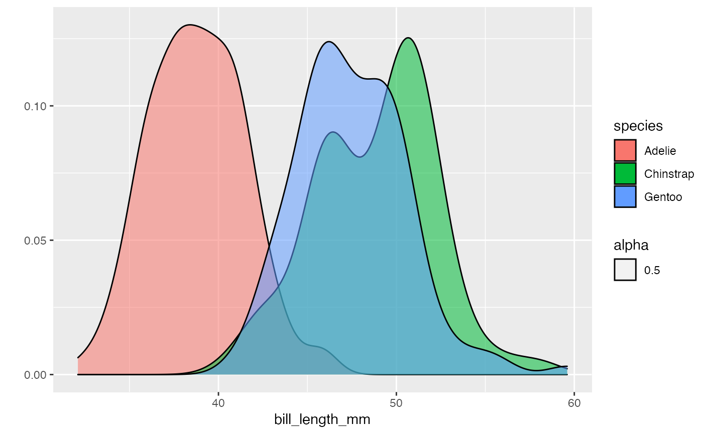

The qplot() function is traditionally used
when your data is not stored in a data.frame/tibble and are
"loose" within your environment and can be convenient if you are
familiar with the base plot(), but haven't quite
learned the grammar of ggplot2.
It is a wrapper that creates a ggplot()
style plot.
However, creating a ggplot() object can be
complex and inconvenient, especially if you want a simple plot
(e.g. a basic histogram). It also requires you to either break
out of a pipeline, or ensure your ggplot()
functions are at the end of a pipe (or introduce curly braces
{} to your pipeline).
Therefore, the pipe_qplot() function will run a
qplot() function for it's side effects and
return your original input unchanged. It can also save your plot
if needed.
pipe_qplot( data, x, y, ..., facets = NULL, margins = FALSE, geom = "auto", xlim = c(NA, NA), ylim = c(NA, NA), log = "", main = NULL, xlab = NULL, ylab = NULL, asp = NA, stat = stat, position = position, theme = NULL, save.options = NULL, print.plot = T )
| data | the data being passed through the pipeline |
|---|---|
| x, y, ... | aesthetic arguments to be passed to the |
| facets, margins, geom, xlim, ylim, log, main, xlab, ylab, asp, stat, position | see the |
| theme | a character string that links to a function of the form
|
| save.options | list of values to be passed to |
| print.plot | should the plot be displayed? Should only be used if
|
palmerpenguins::penguins %>% dplyr::group_by(species) %>% pipe_qplot(culmen_length_mm, fill = species, theme = "light", geom = "density", alpha = 0.5, binwidth = 0.1 ) %>% dplyr::summarise(mean = mean(culmen_length_mm))#> Warning: Ignoring unknown parameters: binwidth#> Warning: Removed 2 rows containing non-finite values (stat_density).#>#> # A tibble: 3 x 2 #> species mean #> <fct> <dbl> #> 1 Adelie NA #> 2 Chinstrap 48.8 #> 3 Gentoo NA